Tuning in unsupervised settings
In supervised modeling scenarios, we observe values of a target (or “response”) variable, and we measure the success of our model based on how well it predicts future response values. To select hyperparameter values, we tune them, trying many possible values and measuring how well each performs when predicting target values of test data.
In the unsupervised modeling setting of
tidyclust, there is no such objective measure of success.
Clustering analyses are typically exploratory rather than testable.
Nonetheless, the core tuning principle of varying inputs and quantifying
results is still applicable.
Specify and fit a model
In this example, we will fit a \(k\)-means cluster model to the
palmerpenguins dataset, using only the bill length and bill
depth of penguins as predictors.
(Please refer to the k-means vignette for an in-depth discussion of this model specification.)
Our goal will be to select an appropriate number of clusters for the model based on metrics.
First, we set up cross-validation samples for our data:
penguins_cv <- vfold_cv(penguins, v = 5)Next, we specify our model with a tuning parameter, make a workflow,
and establish a range of possible values of num_clusters to
try:
kmeans_spec <- k_means(num_clusters = tune())
penguins_rec <- recipe(~ bill_length_mm + bill_depth_mm,
data = penguins
)
kmeans_wflow <- workflow(penguins_rec, kmeans_spec)
clust_num_grid <- grid_regular(num_clusters(),
levels = 10
)
clust_num_grid
#> # A tibble: 10 × 1
#> num_clusters
#> <int>
#> 1 1
#> 2 2
#> 3 3
#> 4 4
#> 5 5
#> 6 6
#> 7 7
#> 8 8
#> 9 9
#> 10 10Then, we can use tune_cluster() to compute metrics on
each cross-validation split, for each possible choice of number of
clusters.
res <- tune_cluster(
kmeans_wflow,
resamples = penguins_cv,
grid = clust_num_grid,
control = control_grid(save_pred = TRUE, extract = identity),
metrics = cluster_metric_set(sse_within_total, sse_total, sse_ratio)
)
res
#> # Tuning results
#> # 5-fold cross-validation
#> # A tibble: 5 × 6
#> splits id .metrics .notes .extracts .predictions
#> <list> <chr> <list> <list> <list> <list>
#> 1 <split [266/67]> Fold1 <tibble [30 × 5]> <tibble> <tibble> <tibble>
#> 2 <split [266/67]> Fold2 <tibble [30 × 5]> <tibble> <tibble> <tibble>
#> 3 <split [266/67]> Fold3 <tibble [30 × 5]> <tibble> <tibble> <tibble>
#> 4 <split [267/66]> Fold4 <tibble [30 × 5]> <tibble> <tibble> <tibble>
#> 5 <split [267/66]> Fold5 <tibble [30 × 5]> <tibble> <tibble> <tibble>
res_metrics <- res %>% collect_metrics()
res_metrics
#> # A tibble: 30 × 7
#> num_clusters .metric .estimator mean n std_err .config
#> <int> <chr> <chr> <dbl> <int> <dbl> <chr>
#> 1 1 sse_ratio standard 1 5 0 Prepro…
#> 2 1 sse_total standard 8971. 5 1.19e+2 Prepro…
#> 3 1 sse_within_total standard 8971. 5 1.19e+2 Prepro…
#> 4 2 sse_ratio standard 0.321 5 1.41e-3 Prepro…
#> 5 2 sse_total standard 8971. 5 1.19e+2 Prepro…
#> 6 2 sse_within_total standard 2885. 5 4.73e+1 Prepro…
#> 7 3 sse_ratio standard 0.202 5 2.21e-3 Prepro…
#> 8 3 sse_total standard 8971. 5 1.19e+2 Prepro…
#> 9 3 sse_within_total standard 1809. 5 3.47e+1 Prepro…
#> 10 4 sse_ratio standard 0.160 5 5.79e-3 Prepro…
#> # ℹ 20 more rowsChoosing hyperparameters
In supervised learning, we would choose the model with the best value of a target metric. However, clustering models in general have no such local maxima or minima. With more clusters in the model, we would always expect the within sum-of-squares to be smaller.
A common approach to choosing a number of clusters is to look for an “elbow”, or notable bend, in the plot of WSS/TSS ratio by cluster number:
res_metrics %>%
filter(.metric == "sse_ratio") %>%
ggplot(aes(x = num_clusters, y = mean)) +
geom_point() +
geom_line() +
theme_minimal() +
ylab("mean WSS/TSS ratio, over 5 folds") +
xlab("Number of clusters") +
scale_x_continuous(breaks = 1:10)
At each increase in the number of clusters, the WSS/TSS ratio decreases, with the amount of decrease getting smaller as the number of clusters grows. We might argue that the drop from two clusters to three, or from three to four, is a bit more extreme than the subsequent drops, so we should probably choose three or four clusters.